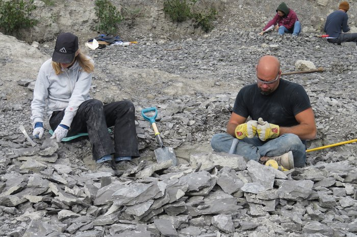
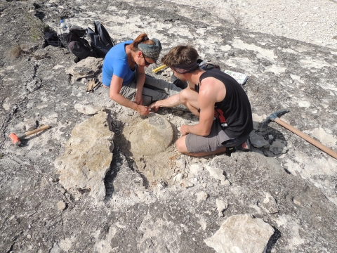

Rockhounding in Hoboken, USA: What You Need to Know
Click here to see our crystal hunting maps Introduction to Rockhounding in Hoboken
Hoboken, a vibrant city located on the west bank of the Hudson River in New Jersey, is renowned for its rich cultural history and picturesque views of the Manhattan skyline. But beyond its urban charm and historical significance, Hoboken boasts a geological landscape that intrigues rockhounding enthusiasts. The city, though small in area, is part of the larger Newark Basin, a geological formation that stretches across New Jersey and New York, offering a plethora of geological treasures for those willing to explore.
The city's diverse landscape, ranging from parks to riverbanks, offers unexpected havens for rockhounding, providing a unique urban twist, where enthusiasts can explore geological formations amidst the city's urban landscape. Whether you are you're a seasoned rockhound or a curious beginner looking for crystals, fossils, or unique rock formations, Hoboken's geological tapestry presents an exciting prospect for urban rockhounding.
Geological History of Hoboken
Hoboken's geological history dates back millions of years to the Triassic Period when the Palisades Sill formed. This massive intrusion of igneous rock shaped the region's landscape and laid the foundation for the diverse mineral deposits found today. The Palisades Sill, composed primarily of diabase, is renowned for its unique columnar jointing, creating a visually stunning natural spectacle.
Over time, erosion and weathering have exposed the Palisades Sill and the underlying sedimentary layers, revealing a rich variety of rocks, minerals, and fossils. The Hudson River, with its constant flow, has also played a role in shaping the geological landscape, depositing sediments, and contributing to the formation of unique geological features.
Popular Rockhounding Locations in Hoboken
While Hoboken is primarily an urban area, several locations within and near the city are popular among rockhounding enthusiasts. Some notable spots include:
- Hoboken Riverfront: The banks of the Hudson River can yield interesting rock specimens, especially after periods of erosion or construction. Hoboken Riverfront is easily accessible and offers a mix of urban and natural landscapes. Rockhounders can walk along the riverbanks and explore areas where erosion may expose new rock formations.
- Stevens Institute of Technology Campus: Known for its historical significance and beautiful campus, the Stevens Institute of Technology Campus provides an educational backdrop to rockhounding. The campus, located on Castle Point, the highest point in Hoboken, offers views of geological layers exposed during the construction of buildings and pathways. The campus grounds also contain geological specimens for the observant collector.
- Weehawken Reservoir: Just north of Hoboken, the Weehawken Reservoir requires a short trip from Hoboken, and provides a more natural setting with a variety of rock types exposed in and around the reservoir area. This spot is ideal for those looking to combine rockhounding with a scenic outdoor experience.
Other Popular Gem Mining Locations in Hoboken
- Pier A Park: Another waterfront park, Pier A Park, provides opportunities for rockhounding along its shoreline. Keep an eye out for interesting rocks and pebbles among the sand and gravel.
- Maxwell Place Park: Situated along the Hudson River, this park offers picturesque views and access to the shoreline. The rocky areas along the water's edge are worth exploring for potential finds.
- Castle Point Park: This park, known for its scenic views, also boasts rocky areas that might yield interesting specimens. The shoreline along the park is another area to investigate.
- Elysian Park: While not directly on the waterfront, this park features rocky outcroppings that could be of interest to rockhounds. Explore the park's paths and trails for potential discoveries.
Identifying Potential Rockhounding Spots
- Research Geological Maps: Identify areas with known geological formations.
- Local Rockhounding Clubs and Online Forums: Gain insights from experienced collectors on promising locations.
- Exploring Construction Sites: Newly exposed earth can reveal hidden geological treasures.
RELATED TOPIC: South Padre Island: Exploring the Geological Wonders of Cameron County
Types of Rocks and Minerals Found in Hoboken
Hoboken's geological diversity translates to a wide range of rocks and minerals that can be found throughout the city. Here are some common finds:
- Shale: Often containing fossils of ancient plants and animals, shale is a common sedimentary rock in the area. Typically gray or black, shale in Hoboken may reveal fossilized remains of plants, insects, and small marine organisms. Its fine layers and brittleness make it relatively easy to split and examine.
- Sandstone: This sedimentary rock can vary in color and composition, sometimes containing interesting mineral deposits. Often found in shades of brown, red, or yellow, sandstone in Hoboken may contain visible grains of quartz and feldspar. It's less likely to contain fossils but can sometimes house interesting mineral inclusions.
- Conglomerate: This rock type is visually striking, composed of variously sized pebbles and stones cemented together. It reflects a dynamic geological past where materials were transported and deposited by ancient rivers.
- Basalt: Dark and dense, basalt from ancient lava flows is a common find. It's often smooth and can contain vesicles (small cavities) formed by gas bubbles during solidification.
- Diabase: A coarser-grained volcanic rock found in the Palisades Sill, often containing minerals such as feldspar and pyroxene. Known for its durability and coarser texture compared to basalt, diabase can include visible crystals of plagioclase feldspar and pyroxene, giving it a speckled appearance.
- Quartz: Clear or milky white, quartz crystals can be found in various sizes and often in association with other rock types. It's a popular find due to its clarity and aesthetic appeal.
- Zeolites: These porous minerals are known for their ability to absorb water and other molecules. They often occur in cavities within volcanic rocks like diabase.
- Fossils: While not as abundant as rocks and minerals, fossils can occasionally be found in sedimentary layers in Hoboken. Keep an eye out for fossilized shells or plant impressions.
Tips for Identifying Different Types of Rocks and Minerals
- Color and Texture: Note the color, grain size, and texture. Shale is typically dark and fine-grained, while sandstone is more granular and can vary in color.
- Hardness: Use the Mohs hardness scale. Quartz, for example, is quite hard (7 on the scale), while shale is softer.
- Fossil Presence: Shale is more likely to contain fossils compared to sandstone or basalt.
- Crystal Structure: Look for the crystalline structure in minerals like quartz and feldspar.
Tools and Equipment for Rockhounding in Hoboken
Basic Tools for Rockhounds

How To Pick Your Pick
A reliable rock pick is essential for any rockhound. It helps in extracting specimens from the ground and breaking apart rocks to reveal hidden treasures. Check out our comparison table to find the rock pick that works best for you.
See Comparison Table
Backpacks & Bags That Fit Just One More Rock
Sturdy backpacks and bags are important for carrying tools and collected specimens. Look for ones with multiple compartments and durable materials. Check out our comparison table to find the bag that works best for you.
See Comparison Table
Chisels & Brushes
Chisels are used to split rocks and access hidden specimens, while brushes help clean dirt off rocks and minerals, revealing their true features. Check out our comparison table to find the chisels and brushes that work best for you.
See Comparison Table
Gloves
Protective gloves are crucial for safeguarding your hands from sharp edges and rough surfaces. Check out our comparison table to find thegloves that work best for you.
See Comparison Table
Glasses
Safety glasses are essential to protect your eyes from flying debris when using tools. Always wear them to ensure your safety while rockhounding. Check out our comparison table to find safety glasses that work best for you.
See Comparison Table
First Aid Kits
A well-stocked first aid kit is a must-have for any outdoor activity. Ensure it includes bandages, antiseptics, and other essentials. Check out our comparison table to find the first aid kit that works best for you.
See Comparison TableAdvanced Equipment for Experienced Rockhounds
- Geological Compass: For taking precise measurements of rock orientations.
- Sifting Screens: Useful in riverbank rockhounding to sort through sediment.
- UV Light: Helps in identifying certain minerals that fluoresce under ultraviolet light.
- Handheld GPS: Ensures accurate navigation and location recording.
Techniques and Tips for Rockhounding in Hoboken
- Start with Research: Before you head out, research the geological history of Hoboken and the types of rocks and minerals you're likely to encounter. This will help you identify your findings.
- Observe and Explore: Take your time to observe the landscape and look for areas where rocks and minerals are exposed. Explore riverbanks, rocky outcroppings, and any other areas where geological formations are visible.
- Look for Clues: Pay attention to clues like color, texture, and shape. Different minerals often exhibit unique characteristics that can help you identify them.
- Surface Searching: Walk and visually scan the ground for exposed rocks and minerals.
- Use Your Tools Carefully: When using your rock hammer or chisel, be cautious and avoid damaging specimens. Start with gentle taps and gradually increase force if needed.
- Document Your Finds: Take photos or notes of your discoveries, including the location where you found them. This can help you create a record of your rockhounding adventures.
Seasonal Considerations for Rockhounding in Hoboken
- Spring and Fall: Ideal times due to moderate temperatures and reduced vegetation.
- Summer: Ensure adequate hydration and sun protection.
- Winter: Rockhounding can be more challenging due to cold and snow, but newly exposed areas can offer unique finds.
RELATED TOPIC: Ohio's Hidden Gem: Unveiling the Geological Wonders of Copperas Mountain (An In-Depth Exploration)
Safety and Legal Considerations
Before you embark on your rockhounding adventure in Hoboken, it's crucial to be aware of the following:
- Safety First: Always prioritize safety when rockhounding. Be mindful of your surroundings, wear appropriate safety gear, and avoid climbing on unstable rocks or cliffs.
- Respect Private Property: Obtain permission before rockhounding on private land. Stick to public areas like parks and riverbanks unless you have express permission from landowners.
- Leave No Trace: Practice Leave No Trace principles by packing out any trash or debris you generate and minimizing your impact on the environment.
- Research Regulations: Familiarize yourself with any local regulations or ordinances regarding rockhounding in Hoboken. Some areas might have restrictions on collecting or removing specimens.
- Stay Hydrated and Protected from the Sun: Bring water and wear sunscreen.
- Be Aware of Surroundings: Urban rockhounding can pose hazards such as uneven ground and sharp objects.
- Carry a First Aid Kit: For minor injuries and emergencies.
Understanding Rockhounding Regulations in Hoboken
- Permits and Permissions: Check if a permit is required for collecting in certain areas.
- Protected Areas: Respect boundaries and regulations in protected parks and reserves.
- Private Property: Always seek permission from landowners before collecting.
Legalities of Collecting Rocks, Minerals, and Fossils
- Public Lands: Generally, small quantities of rocks and minerals can be collected for personal use, but always check local regulations.
- Private Lands: Collecting without permission can lead to trespassing charges.
- Fossils: Some fossils may be protected by law; ensure compliance with regulations regarding fossil collection.
Rockhounding Etiquette
- Respect the Environment: Rockhounding should be done responsibly and with minimal impact on the environment. Avoid disturbing vegetation or wildlife, and leave the area as you find it.
- Share Your Knowledge: If you encounter fellow rockhounds, be friendly and willing to share your knowledge and experiences. Rockhounding can be a social and educational activity.
- Participate in Cleanups: Consider joining or organizing rockhounding cleanups to help keep public areas free of litter and debris.
- Leave No Trace: Collect responsibly and avoid leaving debris or damaging natural features.
- Seek Permission: Always ask for permission when accessing private land.
- Follow Regulations: Adhere to local laws and guidelines to ensure the sustainability of rockhounding activities.
Future of Rockhounding in Hoboken
The future of rockhounding in Hoboken looks promising. With growing interest in geology and outdoor activities, rockhounding is likely to gain even more popularity in the city. Local rockhounding clubs and organizations can play a role in promoting responsible rockhounding practices and educating the public about Hoboken's geological heritage.
New tools and online resources are also making the hobby an enjoyable one, making it a lot easier for rockhounds to identify and locate geological specimens.
Potential Challenges and Opportunities
- Urban Development: Ongoing construction can both pose challenges and create new opportunities for rockhounding.
- Community Engagement: Building a strong local rockhounding community can foster sustainable practices and shared knowledge.